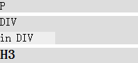
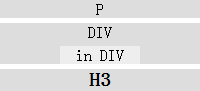
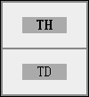
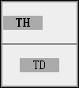
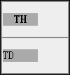

HTML4.01 规范属性表中可以看到不同的 align 属性，作用在不同的元素上，align 属性的意义也不同。
可见，仅 Object IMG APPLET 元素的 align 属性拥有 "middle" 这个值。
关于 HTML4.01 的所有属性的更多信息，请参考 HTML4.01 规范 属性表。
Firefox Chrome Safari 会将 DIV H1~H6 P 元素的 align="middle" 解释为
align="center"，从而使这些元素能够居中对齐。
Firefox 混杂模式会将 TABLE 元素 align="middle" 解释为 align="center"，使 TABLE 元素居中对齐。
IE6 IE7 Chrome Safari Opera 及 IE8 Firefox 的混杂模式下，均将 TD TH 元素的 align="middle" 理解为
align="center"。
不正确的使用 align 属性的 "middle" 属性值会在各浏览器中对应用元素的对齐方式产生差异，从而造成布局上的兼容性问题。
| 所有浏览器 |
|---|
下面根据 "标准参考" 中列出的不同种类的标签分析各浏览器对 align="middle" 理解的差异。
分析以下代码：
<style> div { width:300px; background:#AAA; } img { background:#DDD; } </style> <div>
IMG<img align="middle" src="google.gif" />
</div>
在各浏览器中效果如下：
| 所有浏览器 |
|---|
对于 IMG 元素的 align 属性， "middle" 本身是合法的属性值， 各浏览器均是遵照 W3C 规范进行解释。
分析以下代码：
<style> div { width:200px; height:40px; background:#ddd; } </style> <div> HR<hr
align="middle" style="width:100px;" size="5"
noshade /> </div>
在各浏览器中效果如下：
| 所有浏览器 |
|---|
对于 HR 元素的 align 属性，没有 "middle" 值，但是由于 其 align 属性的缺省值为 "center" ，这里我们无法得知浏览器是将 "middle" 当做 "center" 处理，还是将 "middle" 当做错误属 性值处理，从而应用了缺省值 "center" 。但各浏览器的效果均相同，即 HR 元素居中对齐。
分析以下代码：
<style> div, h3, p { width:200px; background:#DDD; margin:5px 0; } </style> <p align="middle">P</p> <div align="middle">DIV<div style="background:#EEE;
width:80px;">in DIV</div></div> <h3 align="middle">H3</h3>
在各浏览器中效果如下：
| IE6 IE7 IE8 Opera | Firefox Chrome Safari |
|---|---|
|  |  |
分析以下代码：
<style> table { width:100px; } div { width:200px; background:#DDD; } </style> <div>
TABLE <table align="middle"
border="1"><tr><td>TD</td></tr></table> </div>
在各浏览器中效果如下：
| IE6 IE7 IE8 Chrome Safari Opera Firefox(S) | Firefox(Q) |
|---|---|
分析以下代码：
<style> table { width:100px; background:#888; border:1px solid black; } td, th { height:50px;
background:#EEE; } </style> <div> <table> <tr> <th id="h" align="middle"> <div style="width:50px;">TH</div>
</th> </tr> <tr> <td id="d" align="middle"> <div style="width:50px;">TD</div>
</td> </tr> </table> </div>
在各浏览器中效果如下：
| IE6 IE7 Chrome Safari Opera IE8(Q) Firefox(Q) | IE8(S) | Firefox(S) |
|---|---|---|
|  |  |  |
align="middle" 仅在 IMG、OBJECT、APPLET 元素上的 align 属性中是合法值，对于其他元素的 align 属性均为非法。各浏览器在上述三个元素之外的元素上遇到 align="middle" 均按照自己的理解方式解释。同时除单元格元素的 align 属性之外，其他的 align 属性均被 W3C 官方废弃（Deprecated.），所以应避免使用此属性。
| 操作系统版本: | Windows 7 Ultimate build 7600 |
|---|---|
| 浏览器版本: |
IE6
IE7 IE8 Firefox 3.6.2 Chrome 5.0.360.0 dev Safari 4.0.5 Opera 10.51 |
| 测试页面: |
align_IMG.html
align_HR.html align_P.html align_TABLE.html align_TD.html |
| 本文更新时间: | 2010-07-19 |
align middle center td block 单元格 块级 居中